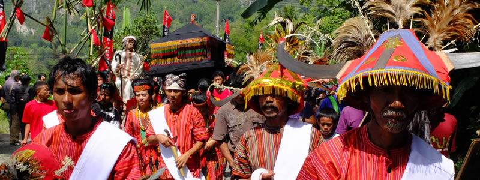

Death as a way of living in Tana Toraja

An equatorial Switzerland, Tana Toraja is the mountainous heart of Sulawesi. It allows for vertiginous views across the valleys and bright green rice paddies fill the landscape creating stairways for giants to touch the heavens. And it is heaven that brings us here, or Torajan's interpretation of it. We are going to a funeral.
Everywhere we see the plumpest buffaloes of south east Asia, these animals are what torajans live for and are treated with care. Children bathe with them in the rivers, and they look healthy and well fed. People pet them, and treat them like the huge investment they are for it is because of them that most Torajan natives are born bankrupt.
When a Torajan dies it is the family who organises and pays for the incredibly elaborate and expensive funeral ceremony. For the occasion the whole family must return to their villages and given than only 30% of Torajans actually live in Toraja it means that most of the time the dead aren't "buried" until years after their death. In the meantime their mummified bodies remain at the family home where they are offered food and tea daily and are considered sick until the first day of their funeral ceremony, when the first buffalo is sacrificed, and they are then pronounced dead.
Funerals vary in size but the norm is that many buffaloes will be sacrificed. At the funeral we attended 30 buffaloes were to be sacrificed. Each buffalo can be worth up to €50k. Hence bankruptcy.
The days here are filled with an incessant cockadoodledoo as the cockerels don't seem to know that dawn only happens once a day. This daily soundtrack is further enriched by the pigs squealing on their way to funeral ceremonies, the loud cicadas at sunset and mobile phones playing the latest Indonesian hits.
In Toraja, everyday is a good day for a funeral. Somewhere in a 60km radius there will be one, but we are extra lucky that a big ceremony is starting today. Foreigners don't need an invitation, their presence is welcomed and considered good luck for the family.
Mr "The Deceased", as our guide refers to him, died in April 2012, more than a year ago, and has since then been patiently waiting for the family to organise his grand send off. The ceremonies will take place over the next 5 days and today is procession day, where the body will be moved from the house to a rice paddy turned into a festival arena 200m down the road and this is where the rest of the ceremonies will take place.
We arrived at the dead man's house to find a crowd gathered around a few tongkonans (traditional houses) one of which had the coffin on top, with an effigy or wood carved life-size image of Mr Deceased called Tau Tau and next to which sat his frail widow in black.
After some speeches which we couldn't understand, the coffin was moved onto a carrying structure ready for the procession, and lunch was served. No crying or sadness just business as usual it seemed. The procession eventually started, with the widow leading the proceedings carried inside a her own litter (not the rubbish kind) behind the 30 sacrificed-to-be buffaloes. A red cloth symbolising the union between husband and wife was tied her hut to her dead husband's 200 meters behind and in the middle was held by all the ladies in the family also all dressed in black.
What followed was more of a comedy sketch than a funeral. The by now fairly drunk men carrying the widow proceeded to shake the structure so vigorously that we were worried that the frail lady wouldn't survive. The same was done to her dead husband at the back of the procession to shake his spirit out of his body, while at the very front the buffaloes caused havoc fighting each other. To add to the hilarity, the 200 meter stretch of road from the house to the ceremony ground was crossed by several electrical wires which meant that several times the tongkonan shaped roof of the coffin platform got caught nearly sending the whole thing to the floor. There was even an impromptu water fight which resulted in a bottle damaging the roof. Everything was so haphazard and slapstick, it was as if it had been rehearsed for a circus.
At the ceremony grounds we were taken to one of the temporary structures built especially for the occasion, which were more like stadium platforms, and got given tea and nibbles. The norm is to offer the family cigarettes as a gift and this was the time to do so.
After another speech which we were told described the dead man's life, two buffaloes were sacrificed in the slowest most inhumane way possible and the deceased was then considered dead.
Then it was time for the bull fight and yet another comedy sketch. The bullring was a muddy rice paddy, completely surrounded by people and was open on two sides so the bulls could enter. But this meant they could also exit. So every time they were released into the ring one ended up chasing the other out, and we watched them running in the distance across the surrounding paddies, chasing the none the wiser farmers peacefully working on their rice crops. In all its strangeness I guess it was a fun way to say goodbye.
The following days were dedicated to receiving all the family guests, killing buffaloes and pigs, and with each member of the family donating meat to this or that person or organisation. On the last day The Deceased would then be taken to a family burial cave, carved inside a rock somewhere in the surrounding hills.
We couldn't stay long enough to watch that part as we had a ferry to catch in Makassar. So we got on a bus the following day, and maybe because it was one of the few buses we took in daylight it was also one of the most scenic journeys we have done in Asia. Towering green mountains with even higher sheer cliffs adorned by coconut trees turned into valleys cascading with fluorescent green rice fields and water buffaloes. Makassar was our last port in friendly Sulawesi, and to the port we headed to board the Pelni ship which would take us all the way to Cabo das Flores, the island today known as simply Flores.
Comments